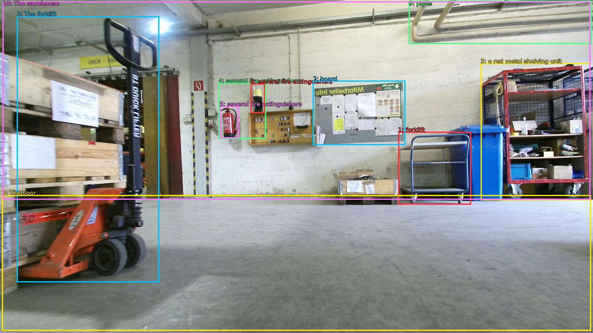

The image shows an empty warehouse with a forklift parked on the left side of the image. The forklift is orange in color and has a black handle. It is positioned in front of a large pile of wooden pallets. On the right side, there is a red metal shelving unit with various items on it. In the background, there are several fire extinguishers and a notice board on the wall. The floor is made of concrete and there are pipes running along the ceiling. The warehouse appears to be well-lit with natural light coming in from the windows.

Original · Caption raw · Grounding raw · Koordinate
Številke so lokalni ID regije. Dolge slikovne oznake so skrajšane; spodaj so celotne fraze. Napovedane regije se lahko prekrivajo ali opisujejo skupine.
| ID | Celotna fraza | bbox xyxy |
|---|---|---|
| 1 | forklift | [1289.280029296875, 427.1400146484375, 1525.43994140625, 663.6600341796875] |
| 2 | The forklift | [54.71999740600586, 52.380001068115234, 515.5199584960938, 915.300048828125] |
| 3 | a red metal shelving unit | [1556.159912109375, 204.66000366210938, 1911.3599853515625, 649.6200561523438] |
| 4 | several fire extinguishers | [707.5199584960938, 268.3800048828125, 861.1199951171875, 450.9000244140625] |
| 5 | several fire extinguishers | [711.3599853515625, 343.9800109863281, 772.7999877929688, 448.7400207519531] |
| 6 | several fire extinguishers | [811.2000122070312, 270.5400085449219, 857.2799682617188, 366.6600036621094] |
| 7 | board | [1012.7999877929688, 261.9000244140625, 1312.3199462890625, 470.34002685546875] |
| 8 | The floor | [6.71999979019165, 632.3400268554688, 1913.2799072265625, 1072.9801025390625] |
| 9 | pipes | [1323.8399658203125, 2.700000047683716, 1915.199951171875, 142.02000427246094] |
| 10 | The warehouse | [8.639999389648438, 4.860000133514404, 1911.3599853515625, 647.4600219726562] |